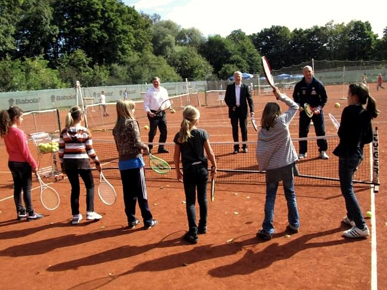

Gegründet 1995, zu Hause an der Beach-Arena
Ein Tennisverein mit fünf Sandplätzen, Beachsport und einem Clubleben, bei dem immer was los ist, vor allem zwanglos.
φίλαθλος
Der Name
Philathlos ist griechisch und bedeutet „Freund des Sports“. Bei uns heißt das: Tennis für Jung und Alt, für die ganze Familie.
Kinder und Jugendliche fördern
Hauptziel des Vereins ist die Förderung der Kinder und Jugendlichen. Die Erwachsenen unterstützen dieses Ziel mit Freude.
Gemeinsam mit unseren Mitgliedern wollen wir durch neue Ideen und Veranstaltungen neue Mitglieder für den Verein gewinnen und die vorhandenen langfristig an den Club binden.
Was wir dafür tun
- Kindergarten-Tennisschule
- Kooperation mit Kindergärten und Schulen
- Fördermaßnahmen für talentierte Kinder
- Ferienkurse und Trainingscamps
- Familientennisolympiade
- Kennenlernnachmittag und Doppel-Abend
Was den Verein geprägt hat
Drei Jahre, die in der Geschichte des Vereins festgehalten sind: die Gründung, die Anerkennung im Programm „Integration durch Sport“ und eine Saison, in der Kinder und Eltern kostenlos Tennis lernen konnten.
-
Gründung des Vereins
Der T.C. Philathlos München e.V. entsteht. Sein Name ist griechisch und bedeutet „Freund des Sports“.
-
Integration durch Sport
Der Verein wird als Stützpunktverein im Programm „Integration durch Sport“ anerkannt.
-
„Mach mit … Spiel in der Beacharena!“
In Kooperation mit dem Sportamt München konnten alle Kinder und ihre Eltern in der Saison 2011 kostenlos Tennis lernen. Bilder vom Projekt

Auf einen Blick
- Name
- T.C. Philathlos München e.V.
- Gegründet
- 1995
- Register
- Vereinsregister beim Amtsgericht München
- Mitglieder
- 296, davon 140 Erwachsene und 156 Kinder und Jugendliche (zuletzt veröffentlichter Stand)
- Verbände
- BLSV 13425, BTV 01115, DTB 2611
- Anlage
- Fünf Sandplätze und Beachfelder, Föhringer Ring 5, 80805 München
- Post
- c/o Christos Theodosiadis, Marianne-Brandt-Str. 20, 80807 München
Partner des Vereins
Sie möchten den Verein unterstützen? Wir freuen uns über Ihre Nachricht.
- Christos TennisschuleTennisschule auf der Anlagersc-tennis.de
- Beach-Arena MünchenBeachsport am Föhringer Ring
- BabolatTennisausrüstungbabolat.com
- dbtvBeachtennis
- H:G Hochschule für Gesundheit & SportHochschule
- Partner werdenSprechen Sie uns anNachricht schreiben